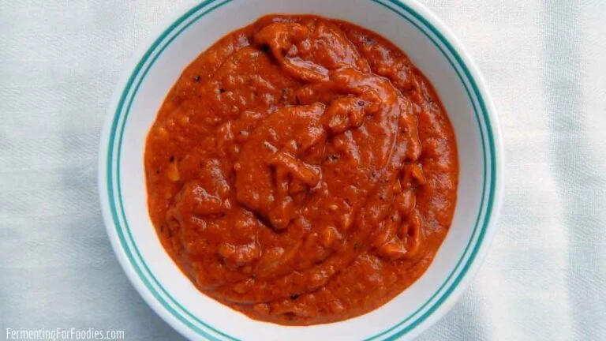

Shiro Wot

Description
One of the most beloved dishes in Ethiopia is Shiro, a chickpea stew made with spices, onions, garlic, peppers, and other seasonal ingredients. Rich in flavor and texture, Shiro is one of the most popular and versatile Ethiopian dishes and can be served both as a main dish or a side dish.
Ingredients
- 3 cups Shiro mitten
- 10 cups water
- 1 cup vegetable oil
- 1 tbsp berbere
- 1 tbsp niter kibbeh
- 3 large finely chopped onion
- 5 tsp garlic powder
- 2 tsp salt
Steps
- Begin by simmering the garlic, onions, and vegetable oil in a mid-sized pot.
- Next, add berbere to the mix and continue simmering for around 10 minutes while also adding a small amount of water to keep the mix from sticking.
- Add the remainder of the water; then add the Shiro mitten flour slowly (in small portions) while stirring continuously.
- Then continue cooking for around 25 minutes until the Shiro becomes thicker but also a bit runny.
- Finally, add niter kibbeh and stir for a bit, then remove from heat. Serve your Shiro hot with injera and enjoy!